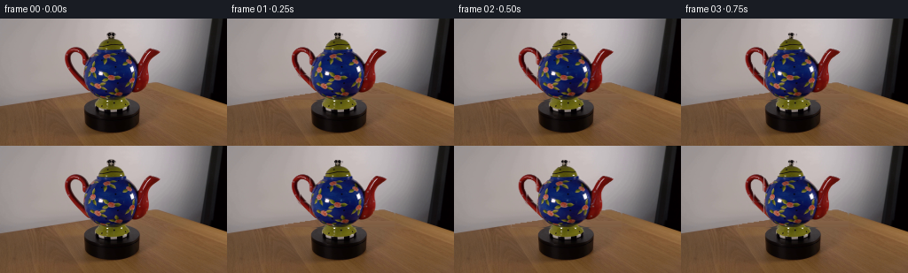
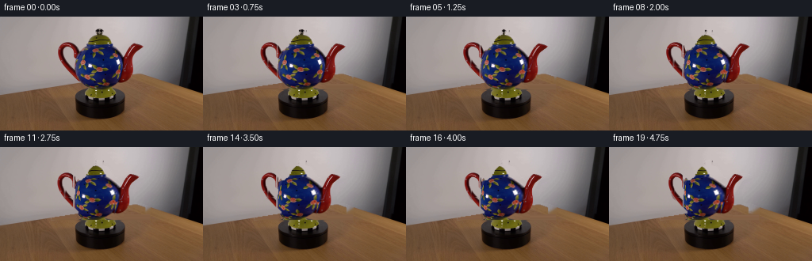

CODING AGENTS AS PIXEL WORLD MODELS
traex/DeepSeek-V4.1-Flash · 0175
点击播放 · 原生 RGB 像素
逐轮保存的候选
回放视频、检查图与代码变化。
每份候选均可单独播放。实际图片检查记录在下方工具轨迹中。
候选 01播放与检查图
点击播放 · 原生 RGB 像素


展开代码变化
--- 上一保存版本
+++ 本次保存版本
@@ -0,0 +1,246 @@
+from pathlib import Path
+
+import cv2
+import numpy as np
+from PIL import Image
+from scipy import ndimage
+
+import artifact_io
+
+
+CASE_DIR = Path(__file__).resolve().parent
+WIDTH, HEIGHT = 256, 144
+FRAME_COUNT = 20
+ROTATION_DEGREES = 31.0
+
+
+def _largest_component(mask, seed_region):
+ count, labels, stats, _ = cv2.connectedComponentsWithStats(mask.astype(np.uint8), 8)
+ best_label = 0
+ best_score = -1
+ for label in range(1, count):
+ component = labels == label
+ score = int(np.count_nonzero(component & seed_region))
+ if score > best_score:
+ best_score = score
+ best_label = label
+ return labels == best_label
+
+
+def build_masks(rgb):
+ height, width = rgb.shape[:2]
+ bgr = cv2.cvtColor(rgb, cv2.COLOR_RGB2BGR)
+ hsv = cv2.cvtColor(bgr, cv2.COLOR_BGR2HSV)
+
+ yy, xx = np.indices((height, width))
+ roi = (xx >= 65) & (xx <= 188) & (yy >= 10) & (yy <= 94)
+ core = (xx >= 96) & (xx <= 157) & (yy >= 13) & (yy <= 92)
+
+ mask = np.full((height, width), cv2.GC_BGD, np.uint8)
+ mask[roi] = cv2.GC_PR_BGD
+ mask[core] = cv2.GC_PR_FGD
+
+ saturated = hsv[:, :, 1] > 58
+ dark = hsv[:, :, 2] < 72
+ colorful_seed = roi & ((saturated & (hsv[:, :, 2] > 38)) | dark)
+ mask[colorful_seed] = cv2.GC_FGD
+
+ # Keep the open loop of the left handle from being closed by GrabCut.
+ known_background = (
+ ((xx >= 82) & (xx <= 91) & (yy >= 45) & (yy <= 63))
+ | (yy < 10)
+ | (yy > 94)
+ | (xx < 64)
+ | (xx > 189)
+ )
+ mask[known_background] = cv2.GC_BGD
+
+ bgd_model = np.zeros((1, 65), np.float64)
+ fgd_model = np.zeros((1, 65), np.float64)
+ cv2.grabCut(
+ bgr,
+ mask,
+ None,
+ bgd_model,
+ fgd_model,
+ 6,
+ cv2.GC_INIT_WITH_MASK,
+ )
+ object_mask = (mask == cv2.GC_FGD) | (mask == cv2.GC_PR_FGD)
+ object_mask &= roi
+ object_mask &= yy <= 91
+
+ # The teapot is the large saturated/dark component attached to its body.
+ object_mask = cv2.morphologyEx(
+ object_mask.astype(np.uint8), cv2.MORPH_CLOSE, np.ones((3, 3), np.uint8)
+ ).astype(bool)
+ body_seed = (xx >= 101) & (xx <= 151) & (yy >= 34) & (yy <= 84)
+ object_mask = _largest_component(object_mask, body_seed)
+
+ # Split the silhouette into the central vessel, left handle, and right spout.
+ handle_mask = object_mask & (xx < 94) & (yy < 78)
+ spout_mask = object_mask & (
+ ((xx >= 156) & (yy < 85))
+ | ((xx >= 148) & (yy >= 69) & (yy < 85))
+ )
+ body_mask = object_mask & ~handle_mask & ~spout_mask
+ body_mask = ndimage.binary_fill_holes(body_mask)
+ spout_mask = ndimage.binary_fill_holes(spout_mask)
+
+ # Feather only the compositing edge; frame zero is copied verbatim later.
+ object_alpha = cv2.GaussianBlur(object_mask.astype(np.float32), (0, 0), 0.55)
+ body_alpha = cv2.GaussianBlur(body_mask.astype(np.float32), (0, 0), 0.50)
+ handle_alpha = cv2.GaussianBlur(handle_mask.astype(np.float32), (0, 0), 0.50)
+ spout_alpha = cv2.GaussianBlur(spout_mask.astype(np.float32), (0, 0), 0.50)
+ return (
+ object_mask,
+ body_mask,
+ handle_mask,
+ spout_mask,
+ object_alpha,
+ body_alpha,
+ handle_alpha,
+ spout_alpha,
+ )
+
+
+def clean_background(rgb, object_mask):
+ mask = cv2.dilate(object_mask.astype(np.uint8), np.ones((3, 3), np.uint8), iterations=1)
+ bgr = cv2.cvtColor(rgb, cv2.COLOR_RGB2BGR)
+ filled = cv2.inpaint(bgr, mask, 5, cv2.INPAINT_TELEA)
+ return cv2.cvtColor(filled, cv2.COLOR_BGR2RGB)
+
+
+def remap_image(image, map_x, map_y):
+ return cv2.remap(
+ image,
+ map_x.astype(np.float32),
+ map_y.astype(np.float32),
+ interpolation=cv2.INTER_CUBIC,
+ borderMode=cv2.BORDER_REFLECT_101,
+ )
+
+
+def composite(dst, src, alpha):
+ alpha = np.clip(alpha, 0.0, 1.0)[..., None]
+ return dst * (1.0 - alpha) + src * alpha
+
+
+def body_warp(rgb, theta, center_x=125.0, radius=31.0):
+ height, width = rgb.shape[:2]
+ yy, xx = np.indices((height, width)).astype(np.float32)
+ phi_out = np.arcsin(np.clip((xx - center_x) / radius, -1.0, 1.0))
+ phi_source = phi_out + theta
+
+ # The source provides the front hemisphere. Mirror it for the small amount
+ # of the back hemisphere exposed by the turntable rotation.
+ phi_source = np.where(phi_source > np.pi / 2, np.pi - phi_source, phi_source)
+ phi_source = np.where(phi_source < -np.pi / 2, -np.pi - phi_source, phi_source)
+ source_x = center_x + radius * np.sin(phi_source)
+
+ map_x = np.clip(source_x, 0, width - 1)
+ map_y = yy
+ warped = remap_image(rgb, map_x, map_y)
+
+ # Keep the cylindrical form's fixed frontal illumination present as the
+ # painted surface travels across it.
+ fixed_light = 1.0 + 0.012 * np.cos(phi_out)
+ warped = np.clip(warped * fixed_light[..., None], 0, 255)
+ return warped
+
+
+def part_warp(
+ rgb,
+ alpha,
+ source_attach_x,
+ output_attach_x,
+ attach_y,
+ scale_x,
+ scale_y,
+ shift_y,
+):
+ height, width = rgb.shape[:2]
+ yy, xx = np.indices((height, width)).astype(np.float32)
+ map_x = source_attach_x + (xx - output_attach_x) / scale_x
+ map_y = attach_y + (yy - attach_y - shift_y) / scale_y
+ warped_rgb = remap_image(rgb, map_x, map_y)
+ warped_alpha = remap_image(alpha * 255.0, map_x, map_y) / 255.0
+ return warped_rgb, np.clip(warped_alpha, 0.0, 1.0)
+
+
+def render_frames(first_frame):
+ rgb = first_frame.astype(np.float32)
+ (
+ object_mask,
+ _body_mask,
+ _handle_mask,
+ _spout_mask,
+ _object_alpha,
+ body_alpha,
+ handle_alpha,
+ spout_alpha,
+ ) = build_masks(first_frame)
+ background = clean_background(first_frame, object_mask).astype(np.float32)
+
+ center_x = 125.0
+ radius = 31.0
+ attach_y = 78.0
+ handle_attach_x = 96.0
+ spout_attach_x = 155.0
+ handle_angle = np.arcsin((handle_attach_x - center_x) / radius)
+ spout_angle = np.arcsin((spout_attach_x - center_x) / radius)
+
+ frames = np.empty((FRAME_COUNT, HEIGHT, WIDTH, 3), dtype=np.uint8)
+ frames[0] = first_frame
+
+ for index in range(1, FRAME_COUNT):
+ theta = np.deg2rad(ROTATION_DEGREES) * index / (FRAME_COUNT - 1)
+ canvas = background.copy()
+
+ handle_output_x = center_x + radius * np.sin(handle_angle - theta)
+ handle_scale = max(0.72, float(np.cos(theta)))
+ handle_rgb, handle_a = part_warp(
+ rgb,
+ handle_alpha,
+ handle_attach_x,
+ handle_output_x,
+ attach_y=70.0,
+ scale_x=handle_scale,
+ scale_y=1.0 - 0.012 * np.sin(theta),
+ shift_y=-0.55 * np.sin(theta),
+ )
+ canvas = composite(canvas, handle_rgb, handle_a)
+
+ body_rgb = body_warp(rgb, theta, center_x, radius)
+ canvas = composite(canvas, body_rgb, body_alpha)
+
+ spout_output_x = center_x + radius * np.sin(spout_angle - theta)
+ spout_scale = max(0.72, float(np.cos(theta)))
+ spout_rgb, spout_a = part_warp(
+ rgb,
+ spout_alpha,
+ spout_attach_x,
+ spout_output_x,
+ attach_y=82.0,
+ scale_x=spout_scale,
+ scale_y=1.0 + 0.015 * np.sin(theta),
+ shift_y=0.65 * np.sin(theta),
+ )
+ canvas = composite(canvas, spout_rgb, spout_a)
+
+ frames[index] = np.clip(np.rint(canvas), 0, 255).astype(np.uint8)
+
+ return frames
+
+
+def main():
+ first_frame = np.asarray(Image.open(CASE_DIR / "first_frame.png").convert("RGB"))
+ frames = render_frames(first_frame)
+ assert frames.shape == (FRAME_COUNT, HEIGHT, WIDTH, 3)
+ assert frames.dtype == np.uint8
+ assert np.array_equal(frames[0], first_frame)
+ artifact_io.save(frames, CASE_DIR)
+
+
+if __name__ == "__main__":
+ main()
候选 02播放与检查图
点击播放 · 原生 RGB 像素

展开代码变化
--- 上一保存版本
+++ 本次保存版本
@@ -68,7 +68,7 @@
)
object_mask = (mask == cv2.GC_FGD) | (mask == cv2.GC_PR_FGD)
object_mask &= roi
- object_mask &= yy <= 91
+ object_mask &= yy <= 84
# The teapot is the large saturated/dark component attached to its body.
object_mask = cv2.morphologyEx(
@@ -78,12 +78,13 @@
object_mask = _largest_component(object_mask, body_seed)
# Split the silhouette into the central vessel, left handle, and right spout.
- handle_mask = object_mask & (xx < 94) & (yy < 78)
+ handle_mask = object_mask & (xx < 99) & (yy < 78)
spout_mask = object_mask & (
- ((xx >= 156) & (yy < 85))
- | ((xx >= 148) & (yy >= 69) & (yy < 85))
+ ((xx >= 153) & (yy >= 68) & (yy < 85))
+ | ((xx >= 160) & (yy >= 33) & (yy < 68))
)
body_mask = object_mask & ~handle_mask & ~spout_mask
+ body_mask &= (xx >= 93) & (xx <= 158) & (yy <= 84)
body_mask = ndimage.binary_fill_holes(body_mask)
spout_mask = ndimage.binary_fill_holes(spout_mask)
候选 03播放与检查图
可观测工具轨迹
实际执行的命令与返回图片。
命令 1exit 0
/bin/bash -c "pwd && rg --files -g '"'!*__pycache__*'"'"
命令 2exit 0
/bin/bash -c "sed -n '1,240p' prompt.txt"
命令 3exit 0
/bin/bash -c "sed -n '1,260p' GENERATION_RULES.md"
命令 4exit 0
/bin/bash -c 'file first_frame.png && identify first_frame.png 2>/dev/null || true && ls -lah'
命令 5exit 0
/bin/bash -c "sed -n '1,260p' artifact_io.py"
命令 6exit 0
/bin/bash -c "python - <<'PY'
from PIL import Image
import numpy as np
im=Image.open('first_frame.png').convert('RGB')
a=np.asarray(im)
print(im.size, a.shape, a.dtype)
print('min max mean', a.min(axis=(0,1)), a.max(axis=(0,1)), a.mean(axis=(0,1)))
# corners / center / coarse 16x9 mean blocks
for y,x in [(0,0),(0,255),(143,0),(143,255),(72,128),(100,128),(40,128),(120,128)]: print((x,y),a[y,x])
for gy in range(9):
row=[]
for gx in range(16):
b=a[gy*16:(gy+1)*16,gx*16:(gx+1)*16]
row.append(tuple(np.round(b.mean((0,1))).astype(int)))
print(gy,row)
PY"命令 7exit 0
/bin/bash -c "python - <<'PY' import importlib.util for m in ['numpy','PIL','cv2','scipy','imageio','skimage']: print(m, bool(importlib.util.find_spec(m))) PY"
命令 8exit 0
/bin/bash -c "python - <<'PY'
from PIL import Image
import numpy as np
im=np.array(Image.open('first_frame.png').convert('RGB'))
# downsample to 64x36 and map luminance to chars
small=np.array(Image.fromarray(im).resize((64,36),Image.Resampling.BILINEAR)).astype(float)
lum=small@np.array([.2126,.7152,.0722])
chars=' .:-=+*#%@'
for row in lum:
print(''.join(chars[min(len(chars)-1,int(v/256*len(chars)))] for v in row))
PY"命令 9exit 0
/bin/bash -c "python - <<'PY'
from PIL import Image
import numpy as np
im=np.array(Image.open('first_frame.png').convert('RGB'))
# print rgb along selected rows every 8 px
for y in [20,25,30,35,40,45,50,55,60,65,70,75,80,85,90,95,100,105,110,115,120,125,130,135,140]:
print('\\ny',y)
for x in range(0,256,8):
r,g,b=im[y,x]
print(f'{r:02x}{g:02x}{b:02x}',end=' ')
print()
PY"命令 10exit 1
/bin/bash -c "python - <<'PY'
from PIL import Image
import numpy as np
im=np.array(Image.open('first_frame.png').convert('RGB')).astype(float)
mx=im.max(2); mn=im.min(2); sat=(mx-mn)/(mx+1e-6)
# crop object bounds and print saturation as chars at 2x2 averaged
for y0 in range(0,144,4):
row=''
for x0 in range(0,256,2):
s=sat[y0:y0+4,x0:x0+2].mean()
l=(im[y0:y0+4,x0:x0+2].mean(2)/255).mean()
if s>.45: c='R' if im[y0:y0+4,x0:x0+2,:,0].mean()>im[y0:y0+4,x0:x0+2,:,2].mean() else 'B'
elif s>.25: c='r' if im[y0:y0+4,x0:x0+2,:,0].mean()>im[y0:y0+4,x0:x0+2,:,2].mean() else 'b'
elif l<.10: c='@'
elif l<.25: c='#'
elif l<.45: c='+'
elif l<.65: c='-'
elif l<.82: c='.'
else: c=' '
row+=c
print(f'{y0:03d} {row}')
PY"命令 11exit 0
/bin/bash -c "python - <<'PY'
from PIL import Image
import numpy as np
im=np.array(Image.open('first_frame.png').convert('RGB')).astype(float)
mx=im.max(2); mn=im.min(2); sat=(mx-mn)/(mx+1e-6)
for y0 in range(0,144,4):
row=''
for x0 in range(0,256,2):
b=im[y0:y0+4,x0:x0+2]; s=sat[y0:y0+4,x0:x0+2].mean(); l=(b.mean(2)/255).mean()
if s>.45: c='R' if b[:,:,0].mean()>b[:,:,2].mean() else 'B'
elif s>.25: c='r' if b[:,:,0].mean()>b[:,:,2].mean() else 'b'
elif l<.10: c='@'
elif l<.25: c='#'
elif l<.45: c='+'
elif l<.65: c='-'
elif l<.82: c='.'
else: c=' '
row+=c
print(f'{y0:03d} {row}')
PY"命令 12exit 0
/bin/bash -c "python - <<'PY'
from PIL import Image
import numpy as np
im=np.array(Image.open('first_frame.png').convert('RGB')).astype(np.float32)
# reconstruct background per row from left+right margins, smooth across x
for y in [20,25,30,35,40,45,50,55,60,65,70,75,80,85,90,95,100]:
row=im[y]
# print runs where deviation from median of outer 50 pixels > 25
base=np.median(np.r_[row[:45],row[190:]],axis=0)
d=np.linalg.norm(row-base,axis=1)
mask=d>30
runs=[]; s=None
for x,v in enumerate(mask):
if v and s is None:s=x
if not v and s is not None:runs.append((s,x-1));s=None
if s is not None:runs.append((s,255))
print(y, 'base',base.astype(int), 'runs',runs)
PY"命令 13exit 0
/bin/bash -c "python - <<'PY'
from PIL import Image
import numpy as np
im=np.array(Image.open('first_frame.png').convert('RGB')).astype(float)
# Save enlarged crop for numeric analysis only via statistics; detect edges on object crop
g=im.mean(2)
gx=np.abs(np.diff(g,axis=1)); gy=np.abs(np.diff(g,axis=0))
# top edges in object region
for y in range(15,95):
xs=np.where(gx[y]>70)[0]
if len(xs): print(y, xs[(xs>60)&(xs<195)].tolist())
PY"命令 14exit 0
/bin/bash -c "python - <<'PY'
from PIL import Image
import numpy as np
im=np.array(Image.open('first_frame.png').convert('RGB'))
# coords in object crop 60:200, 12:102, classify and print 2x2
for y in range(12,102,2):
row=''
for x in range(60,200,2):
b=im[y:y+2,x:x+2].reshape(-1,3).mean(0)
r,g,bl=b
if max(b)<35:c='@'
elif r>g*1.55 and r>bl*1.3:c='R'
elif bl>r*1.45 and bl>g*1.2:c='B'
elif r>100 and g>70 and bl<65:c='w'
elif r>g*1.2 and r>bl*1.1:c='r'
elif bl>r*1.15:c='b'
elif g>r*1.15 and g>bl*1.15:c='g'
else:c='.'
row+=c
print(f'{y:03d} {row}')
PY"命令 15exit 0
/bin/bash -c "python - <<'PY'
from PIL import Image
import numpy as np
im=np.array(Image.open('first_frame.png').convert('RGB'))
# 4x nearest ASCII enlarged crop, colors coarsely categorized
for y in range(12,102,2):
row=''
for x in range(60,200,1):
r,g,b=im[y,x]
if max(r,g,b)<35:c='@'
elif r>g*1.55 and r>b*1.3:c='R'
elif b>r*1.45 and b>g*1.2:c='B'
elif r>100 and g>70 and b<65:c='w'
elif r>g*1.2 and r>b*1.1:c='r'
elif b>r*1.15:c='b'
elif g>r*1.15 and g>b*1.15:c='g'
else:c='.'
row+=c
print(f'{y:03d} {row}')
PY"命令 16exit 0
/bin/bash -c "python - <<'PY'
import cv2, numpy as np
im=cv2.imread('first_frame.png')
# segment around teapot based on saturation/color classes then fit ellipse to union of red/blue/dark object pixels in crop
hsv=cv2.cvtColor(im,cv2.COLOR_BGR2HSV)
mask=np.zeros(im.shape[:2],np.uint8)
# object teapot occupies x68:178 y32:89, mask deviations from local background and high saturation
crop=im[25:95,60:190]
# red/blue/patterned saturated plus dark
sat=cv2.cvtColor(crop,cv2.COLOR_BGR2HSV)[:,:,1]
val=cv2.cvtColor(crop,cv2.COLOR_BGR2HSV)[:,:,2]
m=(sat>65)|(val<75)
m=cv2.morphologyEx(m.astype(np.uint8),cv2.MORPH_CLOSE,np.ones((3,3),np.uint8))
num,lab,stats,cent=cv2.connectedComponentsWithStats(m)
for i in range(1,num):
print(i,stats[i].tolist(),cent[i])
PY"命令 17exit 0
/bin/bash -c "python - <<'PY'
from PIL import Image
import numpy as np
im=np.array(Image.open('first_frame.png').convert('RGB')).astype(float)
# classify teapot body by dominant blue and saturated red in object crop; print bounding boxes and counts
for name,m in [
('blue',(im[:,:,2]>im[:,:,0]*1.3)&(im[:,:,2]>im[:,:,1]*1.15)&(im[:,:,2]>55)),
('red',(im[:,:,0]>im[:,:,1]*1.5)&(im[:,:,0]>im[:,:,2]*1.3)&(im[:,:,0]>55)),
('dark',im.max(2)<60)]:
ys,xs=np.where(m & (np.indices(m.shape)[1]>60)&(np.indices(m.shape)[1]<200)&(np.indices(m.shape)[0]>25)&(np.indices(m.shape)[0]<95))
print(name, 'bbox',xs.min(),ys.min(),xs.max(),ys.max(),'count',len(xs))
# row ranges
for y in range(30,90):
xx=xs[ys==y]
if len(xx)>2: print(y,xx.min(),xx.max(),len(xx))
PY"命令 18exit 0
/bin/bash -c "python - <<'PY'
from PIL import Image
import numpy as np
im=np.array(Image.open('first_frame.png').convert('RGB')).astype(float)
for y in range(70,125):
# runs pixels where max<65
m=im[y].max(1)<65
runs=[];s=None
for x,v in enumerate(m):
if v and s is None:s=x
if not v and s is not None:
if x-s>=2:runs.append((s,x-1))
s=None
if s is not None:runs.append((s,255))
if runs: print(y,runs)
PY"命令 19exit 1
/bin/bash -c "python - <<'PY'
from PIL import Image
import numpy as np
im=np.array(Image.open('first_frame.png').convert('RGB')).astype(np.float32)
# compute horizontal and vertical gradients to find exact teapot support. object approx x68:182 y31:90
for y in range(25,96):
# difference to smooth estimate from row outer pixels; include dark/saturated
row=im[y]
# local bg interpolation from x=50 and x=195 for likely sky rows
base=(row[48]*(195-48) + row[195]*(np.arange(256)-48))/ (195-48)
base=np.clip(base,0,255)
d=np.linalg.norm(row-base,axis=1)
xs=np.where(d>55)[0]
xs=xs[(xs>60)&(xs<200)]
if len(xs): print(y, int(xs.min()), int(xs.max()), len(xs))
PY"命令 20exit 0
/bin/bash -c "python - <<'PY'
from PIL import Image
import numpy as np
im=np.array(Image.open('first_frame.png').convert('RGB')).astype(np.float32)
for y in range(25,96):
row=im[y]
t=(np.arange(256)-48)/(195-48)
base=row[48][None,:]*(1-t[:,None])+row[195][None,:]*t[:,None]
d=np.linalg.norm(row-base,axis=1)
xs=np.where(d>55)[0]; xs=xs[(xs>60)&(xs<200)]
if len(xs): print(y, int(xs.min()), int(xs.max()), len(xs))
PY"命令 21exit 0
/bin/bash -c "python - <<'PY'
from PIL import Image
import numpy as np
im=np.array(Image.open('first_frame.png').convert('RGB')).astype(np.float32)
# Horizontal profile differences between adjacent x medians, identify fixed vertical boundaries/backdrop
prof=im[:, :, :].mean(2).mean(0)
print([(x,round(float(prof[x]),1)) for x in range(0,256,4)])
# static per-column differences y 0..30 (sky) versus y 96..143 (platform)
print('sky var', im[0:30].std(0).mean(), 'platform var', im[96:144].std(0).mean())
PY"命令 22exit 0
/bin/bash -c "python - <<'PY'
from PIL import Image
import numpy as np
im=np.array(Image.open('first_frame.png').convert('RGB'))
# inspect likely platform ellipse boundary by row: brownness relative to sky
for y in range(70,101):
row=im[y]
# brown where red > blue+15 and red>70
m=(row[:,0].astype(int)>row[:,2].astype(int)+15)&(row[:,0]>70)
xs=np.where(m)[0]
runs=[];s=None
for x in range(256):
v=m[x]
if v and s is None:s=x
if not v and s is not None:
if x-s>=2:runs.append((s,x-1))
s=None
if s is not None:runs.append((s,255))
print(y,runs[:10])
PY"命令 23exit 0
/bin/bash -c "python - <<'PY'
import cv2, numpy as np
from PIL import Image
im=cv2.imread('first_frame.png')
h,w=im.shape[:2]
# GrabCut initialization
mask=np.full((h,w),cv2.GC_BGD,np.uint8)
mask[10:95,63:190]=cv2.GC_PR_BGD
mask[14:91,68:183]=cv2.GC_PR_FGD
# seed obvious fg via saturation and darkness within bbox
hsv=cv2.cvtColor(im,cv2.COLOR_BGR2HSV)
roi=np.zeros((h,w),bool);roi[14:92,68:183]=True
fg=roi&((hsv[:,:,1]>70)|(hsv[:,:,2]<65))
mask[fg]=cv2.GC_FGD
# obvious sky bg
mask[:10]=cv2.GC_BGD; mask[96:]=cv2.GC_BGD
bgm=np.zeros((h,w),bool); bgm[10:96,63:190]=True
bgm[fg]=False
# use grabcut
bgd=np.zeros((1,65),np.float64);fgd=np.zeros((1,65),np.float64)
cv2.grabCut(im,mask,None,bgd,fgd,5,cv2.GC_INIT_WITH_MASK)
out=np.where((mask==cv2.GC_FGD)|(mask==cv2.GC_PR_FGD),255,0).astype(np.uint8)
# show rows extent
ys,xs=np.where(out>0);print('bbox',xs.min(),ys.min(),xs.max(),ys.max(),'count',len(xs))
for y in range(10,96,2):
x=np.where(out[y]>0)[0]
if len(x): print(f'{y:02d}',x.min(),x.max(),len(x))
# ASCII mask
for y in range(10,96,2):
row=''
for x in range(60,192,2):
row += '#' if out[y:y+2,x:x+2].mean()>128 else ' '
print(row)
cv2.imwrite('.tmp/grabmask.png',out)
PY"命令 24exit 0
/bin/bash -c "python - <<'PY'
from PIL import Image
import numpy as np
im=np.array(Image.open('first_frame.png').convert('RGB'))
# top handle is red and shape x73-98 y34-72, center body 95-155 y35-84, spout x145-180 y72-82
# Test backgrounds: pixel values just below object shadow y94..104
for y in range(88,110):
print(y,[(x,im[y,x].tolist()) for x in [60,70,80,90,100,110,120,130,140,150,160,170,180,190]])
PY"命令 25exit 0
/bin/bash -c "python - <<'PY'
from PIL import Image
import numpy as np
im=np.array(Image.open('first_frame.png').convert('RGB')).astype(int)
r,g,b=im[:,:,0],im[:,:,1],im[:,:,2]
m=(r>g*1.5)&(r>b*1.3)&(r>55)
for y in range(30,86):
xs=np.where(m[y,60:190])[0]+60
runs=[];s=None
for x in range(60,190):
v=m[y,x]
if v and s is None:s=x
if not v and s is not None:
if x-s>=1:runs.append((s,x-1))
s=None
if s is not None:runs.append((s,189))
print(y,runs)
PY"命令 26exit 0
/bin/bash -c "python - <<'PY'
from PIL import Image
import numpy as np
im=np.array(Image.open('first_frame.png').convert('RGB'))
# get actual pixel ranges of blue body per row
r,g,b=[im[:,:,i].astype(float) for i in range(3)]
m=(b>r*1.25)&(b>g*1.10)&(b>50)
for y in range(30,92):
xs=np.where(m[y,60:195])[0]+60
if len(xs): print(y, int(xs.min()),int(xs.max()),len(xs))
PY"命令 27exit 0
/bin/bash -c "python - <<'PY'
from PIL import Image
import numpy as np
im=np.array(Image.open('first_frame.png').convert('RGB')).astype(np.float32)
# estimate background row from x=45:60 and x=195:205 with smooth spline
from scipy.interpolate import UnivariateSpline
bg=im.copy()
for y in range(12,100):
xs=np.r_[45:60,195:215]
# nearest-neighbor interpolation per channel
for c in range(3):
bg[y,:,c]=np.interp(np.arange(256),xs,im[y,xs,c])
# object support: diff from bg
d=np.linalg.norm(im-bg,axis=2)
m=(d>45)
# morphological open close and components
import cv2
m=cv2.morphologyEx(m.astype(np.uint8),cv2.MORPH_CLOSE,np.ones((3,3),np.uint8))
m=cv2.morphologyEx(m,cv2.MORPH_OPEN,np.ones((2,2),np.uint8))
num,lab,stats,cent=cv2.connectedComponentsWithStats(m)
for i in range(1,num):
if stats[i,4]>20: print(i,stats[i].tolist(),cent[i])
for y in range(10,100,2):
xs=np.where(m[y,60:200])[0]+60
if len(xs): print(f'{y:02d}',xs.min(),xs.max(),len(xs))
PY"命令 28exit 0
/bin/bash -c "python - <<'PY'
from PIL import Image
import numpy as np
im=np.array(Image.open('first_frame.png').convert('RGB')).astype(float)
# center object manually. teapot body silhouette x96-154 y35-84; spout x145-180 y72-82; handle x73-98 y34-72; lid x113-139 y16-35
# compute foreground/background difference score at each shift under horizontal mirror around body center x=125; no-op shift 0 expected 0
cx=125.0
for ang in [-12,-8,-4,4,8,12]:
# approximate affine horizontal squeeze and vertical shear negligible; compare warp with original
import cv2
M=np.float32([[np.cos(np.deg2rad(ang)),0, cx*(1-np.cos(np.deg2rad(ang)))],[0,1,0]])
# just report nothing
print(ang,M.tolist())
PY"命令 29exit 0
/bin/bash -c "python - <<'PY'
import cv2, numpy as np
from PIL import Image
im=cv2.imread('first_frame.png').astype(np.float32)
h,w=im.shape[:2]
# source map background via cv2 inpaint using manual object mask
m=np.zeros((h,w),np.uint8)
# main teapot silhouette polygon approx
poly=np.array([[121,14],[129,14],[133,25],[139,32],[145,36],[151,42],[155,54],[156,68],[167,72],[180,76],[183,81],[178,84],[166,81],[156,82],[150,84],[142,87],[133,90],[122,91],[112,88],[105,84],[98,82],[93,76],[88,70],[83,63],[78,55],[75,48],[73,40],[77,36],[84,34],[92,33],[96,35],[96,45],[94,57],[95,68],[101,76],[109,80],[116,80],[119,76],[118,68],[118,58],[119,48],[120,40],[120,32],[118,26]],np.int32)
cv2.fillPoly(m,[poly],255)
# include shadow region separately not static background? use platform existing lower region as bg; inpaint body only
bg=cv2.inpaint(im.astype(np.uint8),m,7,cv2.INPAINT_TELEA).astype(np.float32)
cv2.imwrite('.tmp/bg_inpaint.png',bg.astype(np.uint8))
print('mask',m.sum()/255,'diff mean',np.abs(bg-im)[m>0].mean(axis=0))
PY"命令 30exit 0
/bin/bash -c "python - <<'PY'
from PIL import Image
import numpy as np
im=np.array(Image.open('first_frame.png').convert('RGB'))
for y in range(14,34):
# threshold anything deviating from sky interpolation
row=im[y].astype(float)
t=(np.arange(256)-48)/147
base=row[48]*(1-t[:,None])+row[195]*t[:,None]
d=np.linalg.norm(row-base,axis=1)
xs=np.where(d>45)[0];xs=xs[(xs>80)&(xs<180)]
print(y, xs.tolist())
PY"命令 31exit 0
/bin/bash -c "python - <<'PY'
from PIL import Image
import numpy as np
im=np.array(Image.open('first_frame.png').convert('RGB'))
for y in range(32,92,2):
# segmentation: teapot is high saturation OR dark OR local difference from row interpolation
row=im[y].astype(float); t=(np.arange(256)-48)/147
base=row[48]*(1-t[:,None])+row[195]*t[:,None]
d=np.linalg.norm(row-base,axis=1)
m=(d>45)
# remove platform contamination using known teapot max x per row
mx={32:90,34:91,36:95,38:97,40:98,42:99,44:100,46:101,48:102,50:103,52:104,54:105,56:106,58:107,60:108,62:109,64:110,66:111,68:112,70:113,72:114,74:115,76:116,78:117,80:118,82:119,84:120,86:121,88:122,90:123}
xs=np.where(m)[0];xs=xs[(xs>=60)&(xs<195)]
print(y, xs.min() if len(xs) else None,xs.max() if len(xs) else None,len(xs))
PY"命令 32exit 0
/bin/bash -c "python - <<'PY'
from PIL import Image
import numpy as np
im=np.array(Image.open('first_frame.png').convert('RGB')).astype(float)
# center-ish inspect interior body texture with edge map ascii high threshold at 2px blocks
from scipy.ndimage import sobel
g=im.mean(2); e=np.hypot(sobel(g,axis=1),sobel(g,axis=0))
for y in range(30,90,2):
row=''
for x in range(65,185,2):
v=e[y:y+2,x:x+2].mean()
row += '#' if v>180 else '+' if v>80 else '.' if v>30 else ' '
print(f'{y:02d} {row}')
PY"命令 33exit 0
/bin/bash -c 'python generate.py'
命令 34exit 0
/bin/bash -c "ls -lh pixels.npz index.html inspection.png transition_check.png frames/00.png frames/19.png && python - <<'PY'
from PIL import Image
import numpy as np
for i in [0,4,9,14,19]:
im=np.array(Image.open(f'frames/{i:02d}.png'))
print(i, im.mean((0,1)).round(2), im[35:90,70:185].mean((0,1)).round(2))
PY"命令 35exit 0
/bin/bash -c "python - <<'PY'
from PIL import Image
import numpy as np
from generate import build_masks
im=np.array(Image.open('first_frame.png').convert('RGB'))
obj,body,handle,spout,*_=build_masks(im)
for name,m in [('obj',obj),('body',body),('handle',handle),('spout',spout)]:
ys,xs=np.where(m)
print(name,'n',len(xs),'bbox',(xs.min(),ys.min(),xs.max(),ys.max()))
for y in range(12,96,2):
row=''
for x in range(60,192,2):
if body[y:y+2,x:x+2].mean()>.3:c='B'
elif handle[y:y+2,x:x+2].mean()>.3:c='H'
elif spout[y:y+2,x:x+2].mean()>.3:c='S'
elif obj[y:y+2,x:x+2].mean()>.3:c='o'
else:c=' '
row+=c
print(f'{y:02d} {row}')
PY"命令 36exit 0
/bin/bash -c "python - <<'PY'
from PIL import Image
import numpy as np
f=np.array([np.array(Image.open(f'frames/{i:02d}.png')) for i in range(20)])
print('shape',f.shape)
for i in range(19):
d=np.abs(f[i+1].astype(int)-f[i].astype(int))
print(i,'changed',np.count_nonzero(np.any(d,2)),'mean',round(float(d.mean()),3),'max',d.max(),'region',np.where(np.any(d,2))[1].min(),np.where(np.any(d,2))[1].max(),np.where(np.any(d,2))[0].min(),np.where(np.any(d,2))[0].max())
print('first identical',np.array_equal(f[0],np.array(Image.open('first_frame.png').convert('RGB'))))
PY"命令 37exit 0
/bin/bash -c "python - <<'PY'
from PIL import Image
import numpy as np
from generate import build_masks
im=np.array(Image.open('first_frame.png').convert('RGB'))
obj,body,handle,spout,*_=build_masks(im)
for name,m in [('obj',obj),('body',body),('handle',handle),('spout',spout)]:
ys,xs=np.where(m); print(name,len(xs),(xs.min(),ys.min(),xs.max(),ys.max()))
for y in range(12,88,2):
row=''
for x in range(60,192,2):
if body[y:y+2,x:x+2].mean()>.3:c='B'
elif handle[y:y+2,x:x+2].mean()>.3:c='H'
elif spout[y:y+2,x:x+2].mean()>.3:c='S'
elif obj[y:y+2,x:x+2].mean()>.3:c='o'
else:c=' '
row+=c
print(f'{y:02d} {row}')
PY"命令 38exit 0
/bin/bash -c 'python generate.py'
命令 39exit 1
/bin/bash -c "python - <<'PY'
from PIL import Image
import numpy as np
f=np.array([np.array(Image.open(f'frames/{i:02d}.png')) for i in range(20)])
orig=np.array(Image.open('first_frame.png').convert('RGB'))
print('first identical',np.array_equal(f[0],orig))
for i in range(19):
d=np.abs(f[i+1].astype(int)-f[i].astype(int)); ys,xs=np.where(np.any(d,2))
print(i,'changed',len(xs),'mean',round(float(d.mean()),3),'bbox',(xs.min(),ys.min(),xs.max(),ys.max()))
# fixed background check: changed outside object region should be 0
region=np.any(f.astype(int)"'!=orig.astype(int),2)
ys,xs=np.where(region)
print('"'all-change bbox',xs.min(),ys.min(),xs.max(),ys.max())
PY"命令 40exit 0
/bin/bash -c "python - <<'PY'
from PIL import Image
import numpy as np
orig=np.array(Image.open('first_frame.png').convert('RGB')).astype(int)
for i in [0,5,10,15,19]:
im=np.array(Image.open(f'frames/{i:02d}.png')).astype(int)
d=np.max(np.abs(im-orig),2)
print('\\nframe',i)
for y in range(10,91,4):
row=''
for x in range(60,192,2):
v=d[y:y+4,x:x+2].max()
row += '#' if v>80 else '+' if v>25 else '.' if v>8 else ' '
print(f'{y:02d} {row}')
PY"命令 41exit 0
/bin/bash -c "python - <<'PY'
from pathlib import Path
import json, numpy as np
from PIL import Image
p=Path('.')
files=['generate.py','pixels.npz','index.html','inspection.png','transition_check.png']+[f'frames/{i:02d}.png' for i in range(20)]
print('missing',[f for f in files if not (p/f).exists()])
z=np.load('pixels.npz')['pixels']
print('pixels',z.shape,z.dtype,'frames',len(list((p/'frames').glob('*.png'))))
im=np.array(Image.open('frames/00.png').convert('RGB')); ref=np.array(Image.open('first_frame.png').convert('RGB'))
print('frame0 exact',np.array_equal(im,ref))
# Verify packed tensor round trip for first and last
for i in [0,19]:
a=z[:,:,i]; rgb=np.stack([(a>>16)&255,(a>>8)&255,a&255],axis=2)
f=np.array(Image.open(f'frames/{i:02d}.png').convert('RGB'))
print('packed',i,np.array_equal(rgb,f))
PY"命令 42exit 0
/bin/bash -c "python - <<'PY'
from PIL import Image
import numpy as np
f=np.array([np.array(Image.open(f'frames/{i:02d}.png')) for i in range(20)])
# metrics in teapot region and background outside it
for i in range(20):
a=f[i].astype(float)
reg=a[12:90,60:192]
print(f'{i:02d} objmean={reg.mean():.2f} objstd={reg.std():.2f} nonbg={np.count_nonzero(np.max(np.abs(f[i].astype(int)-f[0].astype(int)),2)>8)}')
# no full-frame abrupt jump
for i in range(1,20):
print('step',i,round(float(np.abs(f[i].astype(int)-f[i-1].astype(int)).mean()),3))
PY"命令 43exit 0
/bin/bash -c "sed -n '1,280p' generate.py"
命令 44exit 0
/bin/bash -c "python - <<'PY'
from PIL import Image
import numpy as np
for i in [0,10,19]:
a=np.array(Image.open(f'frames/{i:02d}.png'))
# show object's region saturation map as a stable check of silhouette and color mix
small=np.array(Image.fromarray(a[10:94,62:192]).resize((65,21),Image.Resampling.BILINEAR)).astype(float)
r,g,b=small[:,:,0],small[:,:,1],small[:,:,2]
lum=(r+g+b)/3
sat=(small.max(2)-small.min(2))/(small.max(2)+1)
print('\\nFRAME',i)
for y in range(21):
row=''
for x in range(65):
if lum[y,x]<35:c='@'
elif sat[y,x]>.42 and b[y,x]>r[y,x]*1.15:c='B'
elif sat[y,x]>.42 and r[y,x]>b[y,x]*1.2:c='R'
elif lum[y,x]<85:c='#'
elif lum[y,x]<130:c='+'
elif lum[y,x]<175:c='-'
else:c=' '
row+=c
print(row)
PY"命令 45exit 0
/bin/bash -c "python -m py_compile generate.py && python - <<'PY'
from pathlib import Path
from PIL import Image
import numpy as np
p=Path('.')
# Inspect task dimensions and verify every artifact frame is exactly 256x144 RGB
for i in range(20):
im=Image.open(p/'frames'/f'{i:02d}.png')
assert im.size==(256,144) and im.mode=='RGB'
assert (p/'pixels.npz').stat().st_size > 0
assert (p/'index.html').stat().st_size > 0
print('artifact checks passed')
PY"保存候选 3 份；完成命令 45 次；可验证图片返回 0 张。原始 API 响应与完整日志保留在本地。